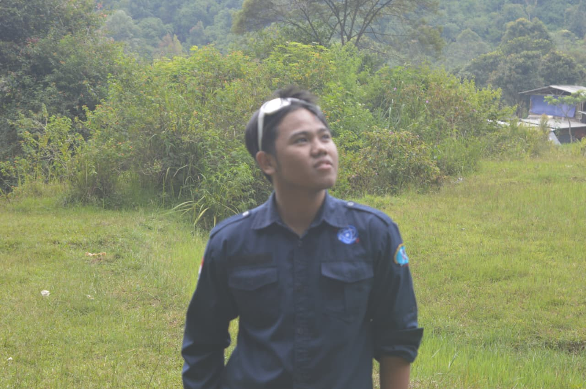
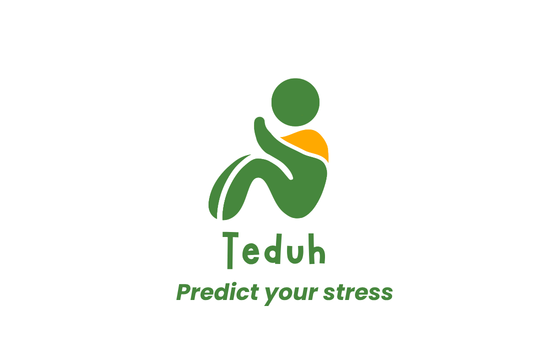
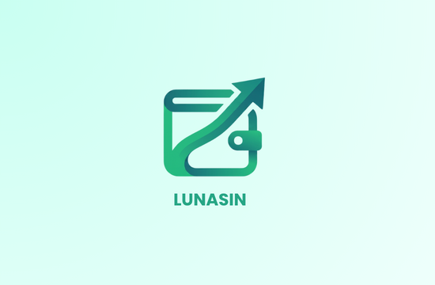
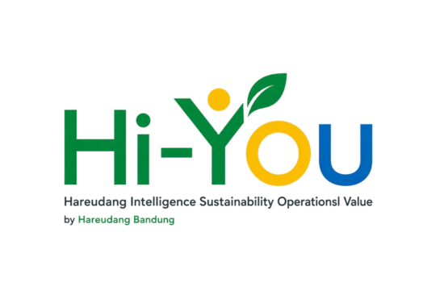
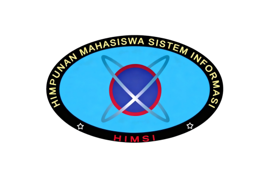
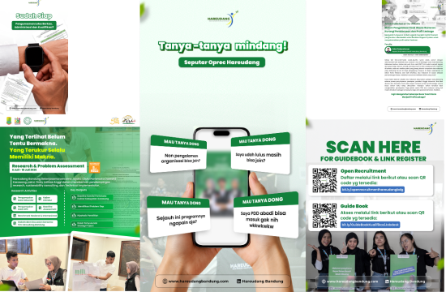
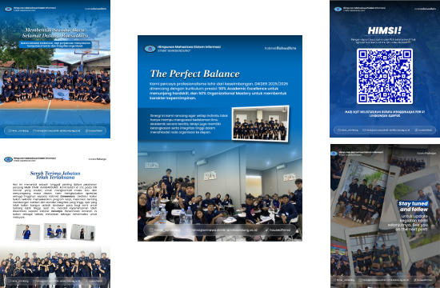

Halo, saya Erick Faturahman
Menjembatani antarmuka yang estetis dengan kegunaan teknis yang kompleks.

Saya adalah mahasiswa Sistem Informasi yang memadukan kreativitas desain grafis dengan logika software development. Memiliki rekam jejak dalam memimpin sisi teknis (IT Lead) untuk berbagai proyek pengembangan aplikasi, saya terbiasa menerjemahkan ide-ide visual ke dalam arsitektur kode yang solid. Bagi saya, produk digital yang hebat tidak hanya tentang estetika yang memanjakan mata, tetapi juga sistem yang efisien, skalabel, dan fungsional di baliknya.
Tahun Pengalaman
Proyek Desain & Web
User Research, Wireframing, Prototyping, & Interface Design.
Front-End Development, Landing Pages, & Dashboard Admin.
Social Media Campaign, Event Banners, & Visual Branding.






"Terbuka untuk kolaborasi proyek digital baru, perancangan antarmuka aplikasi, maupun riset pengembangan web."
Butuh partner untuk merancang UI/UX, membangun website, atau kebutuhan desain grafis? Mari diskusikan ide Anda.